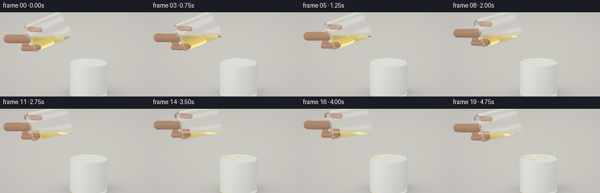
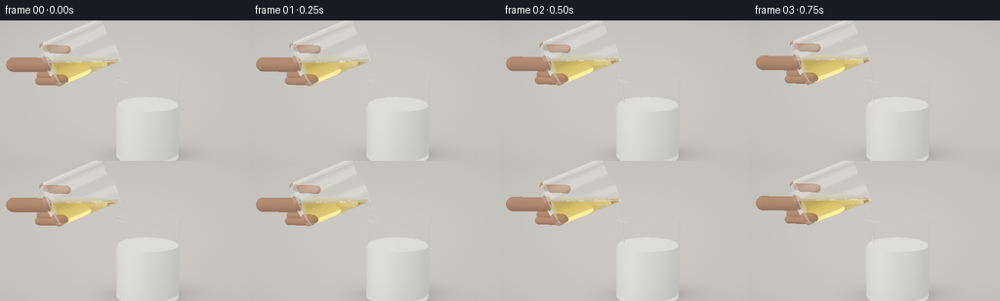
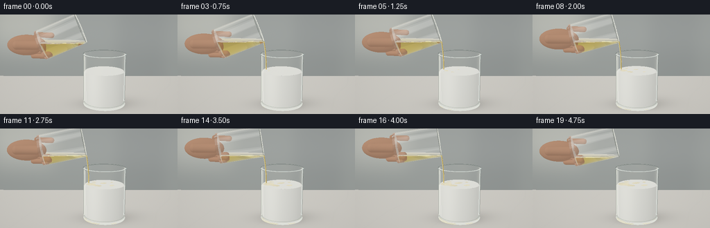

CODING AGENTS AS PIXEL WORLD MODELS
traex/GPT-6.1-Sol · material_0018
点击播放 · 原生 RGB 像素
逐轮保存的候选
回放视频、检查图与代码变化。
每份候选均可单独播放。实际图片检查记录在下方工具轨迹中。
候选 01播放与检查图
点击播放 · 原生 RGB 像素


展开代码变化
--- 上一保存版本
+++ 本次保存版本
@@ -0,0 +1,360 @@
+from pathlib import Path
+import json, math, time
+import numpy as np
+from PIL import Image
+import artifact_io
+
+ROOT = Path(__file__).resolve().parent
+SPEC = json.loads((ROOT/'task_spec.json').read_text())
+SCALE=2
+W,H=SPEC['width']*SCALE,SPEC['height']*SCALE
+DT=np.float32
+AIR,GLASS,OIL,MILK,TABLE,SKIN=0,1,2,3,4,5
+IOR=np.array([1.,1.515,1.468,1.34,1.,1.4],dtype=DT)
+ABS=np.array([[0,0,0],[.016,.009,.006],[.18,.62,2.8],[0,0,0],[0,0,0],[0,0,0]],dtype=DT)
+EPS=0.00015
+
+def normalize(v):
+ return v/np.maximum(np.linalg.norm(v,axis=-1,keepdims=True),1e-9)
+
+def smooth(a,b,x):
+ q=np.clip((x-a)/(b-a),0,1)
+ return q*q*(3-2*q)
+
+# A small analytic ray tracer. All geometry and lighting are generated here.
+class Scene:
+ def __init__(self,frame):
+ self.t=frame/(SPEC['frames']-1)
+ t=self.t
+ self.center=np.array([.38,.035,0],dtype=DT)
+ self.ro=.505; self.ri=.479; self.height=1.265
+ self.level=.88+.019*smooth(.06,.92,t)
+ self.flow=smooth(.035,.16,t)*(1-smooth(.88,1.0,t))
+ self.angle=np.deg2rad(67+14*smooth(0,.8,t)-4*smooth(.91,1.,t))
+ self.axis=np.array([np.sin(self.angle),np.cos(self.angle),0],dtype=DT)
+ self.sr=.365; self.si=.343; self.sh=1.03
+ # Keep the pouring lip steady while tipping the tumbler very gently.
+ self.lip=np.array([-.055,1.59,.005],dtype=DT)
+ self.down=normalize(np.array([self.axis[1],-self.axis[0],0],dtype=DT))
+ self.top=self.lip-self.down*self.si
+ self.base=self.top-self.axis*self.sh
+ self.fill=self.lip[1]+.038*self.flow
+ self.stream=[]
+ if self.flow>.015:
+ end=np.array([self.lip[0]+.055,self.level+.032,.005],dtype=DT)
+ for j in range(4):
+ u,v=j/4,(j+1)/4
+ p=self.lip*(1-u)+end*u
+ q=self.lip*(1-v)+end*v
+ p[0]+=.018*np.sin(np.pi*u)
+ q[0]+=.018*np.sin(np.pi*v)
+ rad=(.014+.005*(1-u))*np.sqrt(self.flow)*(1+.08*np.sin(frame*1.3+j*.9))
+ self.stream.append((p,q,rad))
+ # A hand enters from the cropped left edge, with only the supporting
+ # thumb and two fingertips visible behind the clear source glass.
+ self.hand=[]
+ # It remains largely out of frame, keeping the liquid the focal point.
+ b=self.base
+ self.hand.append((b+np.array([-.54,.025,.13]),b+np.array([-.06,.02,.13]),.11))
+ self.hand.append((b+np.array([-.10,.24,-.12]),b+np.array([.25,.23,-.08]),.066))
+ self.hand.append((b+np.array([-.16,-.17,-.05]),b+np.array([.19,-.15,.045]),.069))
+ self.hand.append((b+np.array([-.19,-.26,-.03]),b+np.array([.13,-.25,.055]),.064))
+
+ def medium(self,p):
+ m=np.zeros(len(p),dtype=np.int8)
+ # Receiving glass, hollow thick-walled cylinder.
+ q=p-self.center
+ r=q[:,0]**2+q[:,2]**2
+ inside=(r<self.ro**2)&(q[:,1]>0)&(q[:,1]<self.height)
+ cavity=(r<self.ri**2)&(q[:,1]>.059)&(q[:,1]<self.height+.002)
+ m[inside & ~cavity]=GLASS
+ m[cavity & (p[:,1]<self.level)]=MILK
+ # Source glass and its truly horizontal oil/air interface.
+ q=p-self.base
+ z=q@self.axis
+ radial=np.sum(q*q,axis=1)-z*z
+ outer=(radial<self.sr**2)&(z>0)&(z<self.sh)
+ inner=(radial<self.si**2)&(z>.052)&(z<self.sh+.001)
+ m[outer&~inner]=GLASS
+ m[outer&inner&(p[:,1]<self.fill)]=OIL
+ for a,b,r in self.stream:
+ d=b-a; h=np.linalg.norm(d); ax=d/h
+ q=p-a; z=q@ax
+ rr=np.sum(q*q,axis=1)-z*z
+ m[(z>=-.001)&(z<=h+.001)&(rr<r*r)]=OIL
+ return m
+
+ def intersect(self,o,d):
+ n=len(o)
+ best=np.full(n,1e5,dtype=DT)
+ norm=np.zeros_like(o)
+ tags=np.zeros(n,dtype=np.int8)
+ def accept(t,nm,ok,tag=0):
+ ix=ok&(t>EPS)&(t<best)
+ best[ix]=t[ix]
+ norm[ix]=nm[ix]
+ tags[ix]=tag
+ def cylinder(c,axis,r,h0,h1,tag=0,oilclip=False):
+ q=o-c
+ dz=d@axis; qz=q@axis
+ dp=d-dz[:,None]*axis; qp=q-qz[:,None]*axis
+ a=np.sum(dp*dp,axis=1); b=np.sum(dp*qp,axis=1)
+ cc=np.sum(qp*qp,axis=1)-r*r
+ disc=b*b-a*cc
+ sq=np.sqrt(np.maximum(disc,0))
+ for sign in [-1,1]:
+ tv=(-b+sign*sq)/np.maximum(a,1e-12)
+ z=qz+tv*dz
+ nm=normalize(qp+tv[:,None]*dp)
+ ok=(disc>=0)&(z>=h0)&(z<=h1)
+ if oilclip: ok &= o[:,1]+tv*d[:,1]<self.fill+EPS
+ accept(tv,nm,ok,tag)
+ def disk(c,axis,r,tag=0,inner=0,source=False):
+ denom=d@axis
+ tv=((c-o)@axis)/np.where(abs(denom)>1e-9,denom,1e-9)
+ q=o+tv[:,None]*d-c
+ rr=np.sum(q*q,axis=1)
+ ok=(rr<=r*r)&(rr>=inner*inner)&(abs(denom)>1e-8)
+ nm=np.broadcast_to(axis,(n,3))
+ accept(tv,nm,ok,tag)
+ Y=np.array([0,1,0],dtype=DT)
+ c=self.center
+ cylinder(c,Y,self.ro,0,self.height)
+ cylinder(c,Y,self.ri,.059,self.height)
+ disk(c,Y,self.ro)
+ disk(c+Y*.059,Y,self.ri)
+ disk(c+Y*self.height,Y,self.ro,inner=self.ri)
+ # Opaque milk, its raised level and a quiet free surface.
+ disk(np.array([c[0],self.level,c[2]],dtype=DT),Y,self.ri,tag=MILK)
+ cylinder(c,Y,self.ri,.059,self.level-c[1],tag=MILK)
+ # The pouring vessel.
+ cylinder(self.base,self.axis,self.sr,0,self.sh)
+ cylinder(self.base,self.axis,self.si,.052,self.sh)
+ disk(self.base,self.axis,self.sr)
+ disk(self.base+self.axis*.052,self.axis,self.si)
+ disk(self.top,self.axis,self.sr,inner=self.si)
+ # Flat oil surface clipped against the tilted cylindrical cavity.
+ denom=d[:,1]
+ tv=(self.fill-o[:,1])/np.where(abs(denom)>1e-9,denom,1e-9)
+ p=o+tv[:,None]*d
+ q=p-self.base; z=q@self.axis; rr=np.sum(q*q,axis=1)-z*z
+ accept(tv,np.broadcast_to(Y,(n,3)),(rr<self.si**2)&(z>.052)&(z<self.sh))
+ # The narrow pour, with rounded transitions between its pieces.
+ for a,b,r in self.stream:
+ ax=normalize(b-a); h=np.linalg.norm(b-a)
+ cylinder(a,ax,r,0,h)
+ disk(a,ax,r); disk(b,ax,r)
+ # Hand surfaces: smooth rounded finger segments.
+ def sphere(c,r,tag):
+ q=o-c; b=np.sum(q*d,axis=1); cc=np.sum(q*q,axis=1)-r*r
+ disc=b*b-cc; root=np.sqrt(np.maximum(disc,0))
+ for s in [-1,1]:
+ tv=-b+s*root
+ accept(tv,normalize(o+tv[:,None]*d-c),disc>0,tag)
+ for a,b,r in self.hand:
+ h=np.linalg.norm(b-a); ax=(b-a)/h
+ cylinder(a,ax,r,0,h,SKIN)
+ sphere(a,r,SKIN);sphere(b,r,SKIN)
+ # Matte countertop.
+ tv=-o[:,1]/np.where(abs(d[:,1])>1e-9,d[:,1],1e-9)
+ accept(tv,np.broadcast_to(Y,(n,3)),abs(d[:,1])>1e-8,TABLE)
+ return best,norm,tags
+
+
+def environment(d):
+ # Broad luminous studio window, dark mullions, and distant soft kitchen tones.
+ up=d[:,1]
+ col=np.empty_like(d)
+ f=smooth(-.32,.50,up)
+ col[:]=np.array([.59,.63,.59])*(1-f[:,None])+np.array([.88,.875,.82])*f[:,None]
+ warm=np.exp(-((d[:,0]+.50)/.55)**2-((up-.05)/.75)**2)
+ col+=warm[:,None]*np.array([.15,.105,.045])
+ # Rectangular photographic softboxes, with softened edges.
+ for center,u,v,ww,hh,power in [
+ ((-3.,3.6,4.),(1,0,0),(0,1,0),.32,.77,1.7),
+ ((3.7,2.3,1.4),(0,0,1),(0,1,0),.12,.79,1.12),
+ ((-1.,4.,-3.),(1,0,0),(0,0,1),.6,.38,.70)]:
+ ax=normalize(np.array(center,dtype=DT)); uu=normalize(np.cross(np.array(v,dtype=DT),ax)); vv=np.cross(ax,uu)
+ z=d@ax
+ xx=(d@uu)/np.maximum(z,1e-4); yy=(d@vv)/np.maximum(z,1e-4)
+ mask=(1-smooth(ww*.87,ww,np.abs(xx)))*(1-smooth(hh*.87,hh,np.abs(yy)))*(z>0)
+ col+=mask[:,None]*np.array([power,power*.985,power*.93])
+ return col
+
+LIGHT=normalize(np.array([-3,5,4],dtype=DT))
+
+def diffuse(p,n,d,tag,scene):
+ light=np.maximum(n@LIGHT,0)
+ base=np.zeros_like(p)
+ milk=tag==MILK
+ if milk.any():
+ pp=p[milk]; nn=n[milk]
+ top=nn[:,1]>.7
+ # The milk is subtly warm, opaque and creamy, not a tinted beverage.
+ c=np.broadcast_to(np.array([.925,.926,.866]),pp.shape).copy()
+ shade=.72+.28*np.maximum(nn@LIGHT,0)
+ shade+=.07*np.maximum(nn[:,1],0)
+ # Soft lateral subsurface illumination.
+ side=~top
+ shade[side]+=.07*np.exp(-((pp[side,0]-(scene.center[0]-.28))/.20)**2)
+ c*=shade[:,None]
+ if top.any():
+ pts=pp[top]
+ x,z=pts[:,0],pts[:,2]
+ hitx=scene.lip[0]+.055
+ rad=np.sqrt((x-hitx)**2+(z-.005)**2)
+ amount=smooth(.06,.90,scene.t)
+ # Oil floats on milk as clear golden lenses which slowly spread.
+ coverage=np.zeros(len(x),dtype=DT)
+ edge=np.zeros(len(x),dtype=DT)
+ pools=[(hitx+.06,.0,.14,.15,0),(.21,.13,.13,.088,.5),(.36,-.11,.11,.075,-.5),(.13,-.22,.075,.055,.6),(.55,.12,.088,.065,-.7),(.57,-.19,.045,.044,0)]
+ for j,(cx,cz,rx,rz,angle) in enumerate(pools):
+ grow=max(.001,(amount-j*.047)/(1-j*.047))**.5
+ xx=(x-cx)*np.cos(angle)+(z-cz)*np.sin(angle)
+ zz=-(x-cx)*np.sin(angle)+(z-cz)*np.cos(angle)
+ rr=np.sqrt((xx/(rx*grow+.0001))**2+(zz/(rz*grow+.0001))**2)
+ rr+=.033*np.sin(np.arctan2(zz,xx)*5+scene.t*2+j)
+ cov=1-smooth(.93,1.06,rr)
+ coverage=np.maximum(coverage,cov)
+ edge=np.maximum(edge,np.exp(-((rr-.985)/.033)**2)*amount)
+ oilcol=np.broadcast_to([.94,.79,.36],(len(x),3)).copy()
+ oilcol+=.08*np.sin(x[:,None]*12+z[:,None]*8)
+ cc=c[top]
+ cc=cc*(1-coverage[:,None]*.52)+oilcol*coverage[:,None]*.52
+ cc-=edge[:,None]*np.array([.085,.075,.02])
+ cc+=edge[:,None]*np.clip(.04+.16*np.sin((x+z)*24),0,.20)[:,None]
+ # Low amplitude concentric waves from the gentle falling thread.
+ waves=np.sin(rad*95-scene.t*38)*np.exp(-rad*5)*scene.flow
+ cc+=waves[:,None]*np.array([.015,.017,.012])
+ crater=np.exp(-(rad/.032)**2)*scene.flow
+ cc-=crater[:,None]*np.array([.095,.084,.03])
+ cc+=np.exp(-((rad-.042)/.008)**2)[:,None]*scene.flow*.12
+ c[top]=cc
+ base[milk]=c
+ table=tag==TABLE
+ if table.any():
+ pp=p[table]; x,z=pp[:,0],pp[:,2]
+ # Pale honed limestone, with restrained photographic surface detail.
+ noise=(np.sin(x*83+np.sin(z*41)*2)*np.sin(z*92+x*13)+.45*np.sin(x*171+z*77))*.003
+ veins=np.exp(-((np.sin(x*1.9+z*.76)+.12*np.sin(z*2.6))/.045)**2)*.008
+ c=np.broadcast_to([.71,.69,.635],pp.shape).copy()
+ c+=noise[:,None]-veins[:,None]
+ dx=x-scene.center[0]
+ shadow=np.exp(-(dx/.66)**2-((z+.055)/.39)**2)*.28
+ contact=np.exp(-(dx/.49)**4-((z+.005)/.33)**4)*.13
+ cast=np.exp(-((dx-.28)/.70)**2-((z+.32)/.44)**2)*.12
+ c*=1-(shadow+contact+cast)[:,None]
+ c+=.035*np.exp(-((dx+.36)/.2)**2-(z/.25)**2)[:,None]
+ base[table]=c
+ skin=tag==SKIN
+ if skin.any():
+ pp=p[skin]; nn=n[skin]
+ ss=.62+.37*np.maximum(nn@LIGHT,0)
+ color=np.broadcast_to([.58,.32,.20],pp.shape).copy()
+ color*=ss[:,None]
+ # Small warm translucency and natural fine skin variation.
+ color+=np.maximum(-nn@LIGHT,0)[:,None]*np.array([.055,.017,.009])
+ color+=(.003*np.sin(pp[:,0]*210)*np.sin(pp[:,1]*238))[:,None]
+ base[skin]=color
+ return base
+
+
+def render(scene):
+ yy,xx=np.mgrid[0:H,0:W].astype(DT)
+ cam=np.array([.05,2.72,7.4],dtype=DT)
+ target=np.array([.02,1.095,0],dtype=DT)
+ forward=normalize(target-cam)
+ right=normalize(np.cross(forward,[0,1,0])).astype(DT)
+ up=normalize(np.cross(right,forward)).astype(DT)
+ halfwidth=1.96/np.linalg.norm(target-cam)
+ x=((xx+.5)/W*2-1)*halfwidth
+ y=(1-(yy+.5)/H*2)*halfwidth*H/W
+ dirs=normalize(forward+x.reshape(-1,1)*right+y.reshape(-1,1)*up)
+ origins=np.broadcast_to(cam,dirs.shape).copy()
+ result=np.zeros_like(origins)
+ weight=np.ones_like(origins)
+ current=np.zeros(len(origins),dtype=np.int8)
+ active=np.arange(len(origins))
+ for bounce in range(12):
+ if not len(active): break
+ o=origins[active]; d=dirs[active]
+ dist,n,tag=scene.intersect(o,d)
+ missed=dist>1e4
+ if missed.any():
+ ix=active[missed]; result[ix]+=weight[ix]*environment(d[missed]); weight[ix]=0
+ has=~missed
+ if not has.any(): break
+ act=active[has]; dd=dist[has]; nn=n[has]; ray=d[has]; p=o[has]+dd[:,None]*ray
+ cur=current[act]
+ weight[act]*=np.exp(-ABS[cur]*dd[:,None])
+ opaque=(tag[has]==MILK)|(tag[has]==TABLE)|(tag[has]==SKIN)
+ if opaque.any():
+ ix=act[opaque]
+ result[ix]+=weight[ix]*diffuse(p[opaque],nn[opaque],ray[opaque],tag[has][opaque],scene)
+ weight[ix]=0
+ tr=~opaque
+ if not tr.any(): active=np.array([],dtype=int); break
+ act=act[tr]; p=p[tr]; ray=ray[tr]; nn=nn[tr]; cur=cur[tr]
+ # Samples on either side robustly select air, glass or oil for refraction.
+ nxt=scene.medium(p+ray*EPS*2.3)
+ # If ray reaches the milk interior through a cylindrical glass wall,
+ # shade it directly, preserving its complete white silhouette.
+ mt=nxt==MILK
+ if mt.any():
+ ix=act[mt]
+ result[ix]+=weight[ix]*diffuse(p[mt],nn[mt],ray[mt],np.full(mt.sum(),MILK),scene)
+ weight[ix]=0
+ keep=~mt
+ act=act[keep]; p=p[keep]; ray=ray[keep]; nn=nn[keep]; cur=cur[keep]; nxt=nxt[keep]
+ if not len(act): active=act; break
+ cos=-np.sum(nn*ray,axis=1)
+ nn=np.where((cos<0)[:,None],-nn,nn)
+ cos=np.abs(cos)
+ eta=IOR[cur]/IOR[nxt]
+ k=1-eta*eta*(1-cos*cos)
+ r0=((IOR[cur]-IOR[nxt])/(IOR[cur]+IOR[nxt]))**2
+ fres=r0+(1-r0)*(1-cos)**5
+ same=cur==nxt
+ fres[same]=0
+ refl=normalize(ray+2*cos[:,None]*nn)
+ # Environment reflections on transparent glass are softly attenuated
+ # where the opaque milk is behind the wall.
+ reflected=environment(refl)
+ result[act]+=weight[act]*fres[:,None]*reflected
+ weight[act]*=(1-fres[:,None])
+ refr=normalize(eta[:,None]*ray+(eta*cos-np.sqrt(np.maximum(k,0)))[:,None]*nn)
+ tir=k<0
+ if tir.any():
+ # Preserve internally reflected rays rather than cutting glass dark.
+ weight[act[tir]]/=np.maximum(1-fres[tir,None],1e-6)
+ result[act[tir]]-=weight[act[tir]]*fres[tir,None]*reflected[tir]
+ refr[tir]=refl[tir]
+ nxt[tir]=cur[tir]
+ refr[same]=ray[same]
+ origins[act]=p+refr*EPS*2.5
+ dirs[act]=refr
+ current[act]=nxt
+ active=act[np.max(weight[act],axis=1)>.003]
+ if len(active): result[active]+=weight[active]*environment(dirs[active])*.92
+ # Photographic response, soft shoulder without washing out the oil.
+ rgb=np.clip(result.reshape(H,W,3),0,4)
+ rgb=rgb/(1+rgb*.24)
+ rgb=np.power(np.clip(rgb,0,1),1/2.2)
+ # A modest vignette and imperceptible grain help avoid sterile CGI.
+ vign=1-.035*(((xx-W*.52)/W)**2+((yy-H*.53)/H)**2)*3
+ rgb*=vign[:,:,None]
+ rng=np.random.default_rng(41)
+ rgb+=rng.normal(0,.00075,rgb.shape)
+ image=Image.fromarray(np.uint8(np.clip(rgb*255,0,255)))
+ return np.asarray(image.resize((SPEC['width'],SPEC['height']),Image.Resampling.LANCZOS))
+
+
+def main():
+ frames=[]
+ start=time.time()
+ for i in range(SPEC['frames']):
+ frames.append(render(Scene(i)))
+ print(f'Rendered {i+1}/{SPEC["frames"]} ({time.time()-start:.1f}s)',flush=True)
+ artifact_io.save(np.stack(frames).astype(np.uint8),ROOT)
+
+if __name__=='__main__':main()
候选 02播放与检查图
点击播放 · 原生 RGB 像素

展开代码变化
--- 上一保存版本
+++ 本次保存版本
@@ -1,7 +1,7 @@
from pathlib import Path
import json, math, time
import numpy as np
-from PIL import Image
+from PIL import Image, ImageDraw
import artifact_io
ROOT = Path(__file__).resolve().parent
@@ -9,9 +9,9 @@
SCALE=2
W,H=SPEC['width']*SCALE,SPEC['height']*SCALE
DT=np.float32
-AIR,GLASS,OIL,MILK,TABLE,SKIN=0,1,2,3,4,5
-IOR=np.array([1.,1.515,1.468,1.34,1.,1.4],dtype=DT)
-ABS=np.array([[0,0,0],[.016,.009,.006],[.18,.62,2.8],[0,0,0],[0,0,0],[0,0,0]],dtype=DT)
+AIR,GLASS,OIL,MILK,TABLE,SKIN,BACK=0,1,2,3,4,5,6
+IOR=np.array([1.,1.515,1.468,1.34,1.,1.4,1.],dtype=DT)
+ABS=np.array([[0,0,0],[.016,.009,.006],[.18,.62,2.8],[0,0,0],[0,0,0],[0,0,0],[0,0,0]],dtype=DT)
EPS=0.00015
def normalize(v):
@@ -155,6 +155,20 @@
h=np.linalg.norm(b-a); ax=(b-a)/h
cylinder(a,ax,r,0,h,SKIN)
sphere(a,r,SKIN);sphere(b,r,SKIN)
+ # Rounded palm connects the fingers to an off-screen wrist.
+ c=self.base+np.array([-.34,.00,-.03],dtype=DT)
+ radii=np.array([.47,.25,.16],dtype=DT)
+ qo=(o-c)/radii; rd=d/radii
+ aa=np.sum(rd*rd,axis=1); bb=np.sum(qo*rd,axis=1)
+ cc=np.sum(qo*qo,axis=1)-1
+ ds=bb*bb-aa*cc
+ for sign in [-1,1]:
+ tv=(-bb+sign*np.sqrt(np.maximum(ds,0)))/aa
+ nm=normalize((o+tv[:,None]*d-c)/(radii*radii))
+ accept(tv,nm,ds>0,SKIN)
+ # Softly defocused neutral kitchen backdrop.
+ tv=(-2.8-o[:,2])/np.where(abs(d[:,2])>1e-9,d[:,2],1e-9)
+ accept(tv,np.broadcast_to(np.array([0,0,1],dtype=DT),(n,3)),abs(d[:,2])>1e-8,BACK)
# Matte countertop.
tv=-o[:,1]/np.where(abs(d[:,1])>1e-9,d[:,1],1e-9)
accept(tv,np.broadcast_to(Y,(n,3)),abs(d[:,1])>1e-8,TABLE)
@@ -246,6 +260,18 @@
c*=1-(shadow+contact+cast)[:,None]
c+=.035*np.exp(-((dx+.36)/.2)**2-(z/.25)**2)[:,None]
base[table]=c
+ back=tag==BACK
+ if back.any():
+ pp=p[back]; x,y=pp[:,0],pp[:,1]
+ c=np.broadcast_to([.37,.395,.378],pp.shape).copy()
+ # Very broad tones suggest a blurred window on the left, cabinets
+ # on the right: restrained set dressing, no distracting sharp detail.
+ bright=np.exp(-((x+2.2)/1.1)**4)*smooth(.12,1.8,y)
+ c+=bright[:,None]*np.array([.19,.18,.145])
+ panel=np.exp(-((x-1.7)/.87)**4)
+ c-=panel[:,None]*np.array([.040,.042,.035])
+ c+=.028*np.tanh((y-.9)*2)[:,None]
+ base[back]=c
skin=tag==SKIN
if skin.any():
pp=p[skin]; nn=n[skin]
@@ -262,11 +288,11 @@
def render(scene):
yy,xx=np.mgrid[0:H,0:W].astype(DT)
cam=np.array([.05,2.72,7.4],dtype=DT)
- target=np.array([.02,1.095,0],dtype=DT)
+ target=np.array([.00,1.04,0],dtype=DT)
forward=normalize(target-cam)
right=normalize(np.cross(forward,[0,1,0])).astype(DT)
up=normalize(np.cross(right,forward)).astype(DT)
- halfwidth=1.96/np.linalg.norm(target-cam)
+ halfwidth=2.14/np.linalg.norm(target-cam)
x=((xx+.5)/W*2-1)*halfwidth
y=(1-(yy+.5)/H*2)*halfwidth*H/W
dirs=normalize(forward+x.reshape(-1,1)*right+y.reshape(-1,1)*up)
@@ -287,7 +313,7 @@
act=active[has]; dd=dist[has]; nn=n[has]; ray=d[has]; p=o[has]+dd[:,None]*ray
cur=current[act]
weight[act]*=np.exp(-ABS[cur]*dd[:,None])
- opaque=(tag[has]==MILK)|(tag[has]==TABLE)|(tag[has]==SKIN)
+ opaque=(tag[has]==MILK)|(tag[has]==TABLE)|(tag[has]==SKIN)|(tag[has]==BACK)
if opaque.any():
ix=act[opaque]
result[ix]+=weight[ix]*diffuse(p[opaque],nn[opaque],ray[opaque],tag[has][opaque],scene)
@@ -345,7 +371,53 @@
rgb*=vign[:,:,None]
rng=np.random.default_rng(41)
rgb+=rng.normal(0,.00075,rgb.shape)
- image=Image.fromarray(np.uint8(np.clip(rgb*255,0,255)))
+ image=Image.fromarray(np.uint8(np.clip(rgb*255,0,255))).convert('RGBA')
+ # Thin grazing-angle glass reflections are subpixel at the requested size.
+ # Draw the corresponding 3-D curves at supersampled resolution to keep
+ # both rims and the cylindrical air gap legible after downsampling.
+ overlay=Image.new('RGBA',(W,H),(0,0,0,0))
+ draw=ImageDraw.Draw(overlay)
+ def project(points):
+ q=np.asarray(points)-cam
+ depth=q@forward
+ return np.stack([(q@right)/(depth*halfwidth)*W/2+W/2,
+ H/2-(q@up)/(depth*halfwidth)*W/2],axis=1)
+ def curve(points,color,width=1):
+ xy=project(points)
+ draw.line([tuple(p) for p in xy],fill=color,width=width)
+ # Recipient top rim: front and rear arcs, with a finer highlight.
+ for start,end,rgba in [(0,np.pi,(221,236,231,135)),(np.pi,2*np.pi,(63,78,74,85))]:
+ a=np.linspace(start,end,140)
+ points=scene.center+np.stack([scene.ro*np.cos(a),np.full_like(a,scene.height),scene.ro*np.sin(a)],axis=1)
+ curve(points,rgba,2)
+ a=np.linspace(0,np.pi,120)
+ points=scene.center+np.stack([scene.ri*np.cos(a),np.full_like(a,scene.height-.006),scene.ri*np.sin(a)],axis=1)
+ curve(points,(250,252,243,110),1)
+ # The clear wall and heavy base show narrow window reflections.
+ for x,z,col,width in [(-scene.ro,.002,(76,89,83,95),1),
+ (scene.ro,.002,(69,79,74,105),1),
+ (-scene.ro+.020,.095,(252,255,244,150),2),
+ (scene.ro-.022,.098,(244,250,245,150),2),
+ (-scene.ro+.052,.218,(255,255,251,62),3)]:
+ y=np.linspace(.105,scene.height-.043,50)
+ points=scene.center+np.stack([np.full_like(y,x),y,np.full_like(y,z)],axis=1)
+ curve(points,col,width)
+ for y,r,rgba in [(.023,scene.ro,(233,241,229,140)),(.064,scene.ri,(149,164,148,70))]:
+ a=np.linspace(0,np.pi,100)
+ points=scene.center+np.stack([r*np.cos(a),np.full_like(a,y),r*np.sin(a)],axis=1)
+ curve(points,rgba,2)
+ # Source glass open lip, elliptical in perspective.
+ az=np.cross(scene.axis,scene.down)
+ for start,end,rgba in [(0,np.pi,(253,252,239,170)),(np.pi,2*np.pi,(89,96,85,95))]:
+ a=np.linspace(start,end,90)
+ points=scene.top+scene.sr*(np.cos(a)[:,None]*scene.down+np.sin(a)[:,None]*az)
+ curve(points,rgba,2)
+ if scene.flow>.015:
+ pts=[scene.stream[0][0]]+[piece[1] for piece in scene.stream]
+ curve(pts,(183,144,37,int(170*scene.flow)),2)
+ pts=np.asarray(pts)+np.array([-.010,0,.005])
+ curve(pts,(255,243,177,int(190*scene.flow)),1)
+ image=Image.alpha_composite(image,overlay).convert('RGB')
return np.asarray(image.resize((SPEC['width'],SPEC['height']),Image.Resampling.LANCZOS))
候选 03播放与检查图

可观测工具轨迹
实际执行的命令与返回图片。
命令 1exit 0
/bin/bash -lc 'ls -la; cat prompt.txt; cat GENERATION_RULES.md; cat task_spec.json'
命令 2exit 0
/bin/bash -lc "cat artifact_io.py; python - <<'PY' import importlib.util for x in ['numpy','PIL','scipy','cv2','numba']: print(x, bool(importlib.util.find_spec(x))) PY"
命令 3exit 0
/bin/bash -lc "cat > generate.py <<'PY'
from pathlib import Path
import json, math, time
import numpy as np
from PIL import Image
import artifact_io
ROOT = Path(__file__).resolve().parent
SPEC = json.loads((ROOT/'task_spec.json').read_text())
SCALE=2
W,H=SPEC['width']*SCALE,SPEC['height']*SCALE
DT=np.float32
AIR,GLASS,OIL,MILK,TABLE,SKIN=0,1,2,3,4,5
IOR=np.array([1.,1.515,1.468,1.34,1.,1.4],dtype=DT)
ABS=np.array([[0,0,0],[.016,.009,.006],[.18,.62,2.8],[0,0,0],[0,0,0],[0,0,0]],dtype=DT)
EPS=0.00015
def normalize(v):
return v/np.maximum(np.linalg.norm(v,axis=-1,keepdims=True),1e-9)
def smooth(a,b,x):
q=np.clip((x-a)/(b-a),0,1)
return q*q*(3-2*q)
# A small analytic ray tracer. All geometry and lighting are generated here.
class Scene:
def __init__(self,frame):
self.t=frame/(SPEC['frames']-1)
t=self.t
self.center=np.array([.38,.035,0],dtype=DT)
self.ro=.505; self.ri=.479; self.height=1.265
self.level=.88+.019*smooth(.06,.92,t)
self.flow=smooth(.035,.16,t)*(1-smooth(.88,1.0,t))
self.angle=np.deg2rad(67+14*smooth(0,.8,t)-4*smooth(.91,1.,t))
self.axis=np.array([np.sin(self.angle),np.cos(self.angle),0],dtype=DT)
self.sr=.365; self.si=.343; self.sh=1.03
# Keep the pouring lip steady while tipping the tumbler very gently.
self.lip=np.array([-.055,1.59,.005],dtype=DT)
self.down=normalize(np.array([self.axis[1],-self.axis[0],0],dtype=DT))
self.top=self.lip-self.down*self.si
self.base=self.top-self.axis*self.sh
self.fill=self.lip[1]+.038*self.flow
self.stream=[]
if self.flow>.015:
end=np.array([self.lip[0]+.055,self.level+.032,.005],dtype=DT)
for j in range(4):
u,v=j/4,(j+1)/4
p=self.lip*(1-u)+end*u
q=self.lip*(1-v)+end*v
p[0]+=.018*np.sin(np.pi*u)
q[0]+=.018*np.sin(np.pi*v)
rad=(.014+.005*(1-u))*np.sqrt(self.flow)*(1+.08*np.sin(frame*1.3+j*.9))
self.stream.append((p,q,rad))
# A hand enters from the cropped left edge, with only the supporting
# thumb and two fingertips visible behind the clear source glass.
self.hand=[]
# It remains largely out of frame, keeping the liquid the focal point.
b=self.base
self.hand.append((b+np.array([-.54,.025,.13]),b+np.array([-.06,.02,.13]),.11))
self.hand.append((b+np.array([-.10,.24,-.12]),b+np.array([.25,.23,-.08]),.066))
self.hand.append((b+np.array([-.16,-.17,-.05]),b+np.array([.19,-.15,.045]),.069))
self.hand.append((b+np.array([-.19,-.26,-.03]),b+np.array([.13,-.25,.055]),.064))
def medium(self,p):
m=np.zeros(len(p),dtype=np.int8)
# Receiving glass, hollow thick-walled cylinder.
q=p-self.center
r=q[:,0]**2+q[:,2]**2
inside=(r<self.ro**2)&(q[:,1]>0)&(q[:,1]<self.height)
cavity=(r<self.ri**2)&(q[:,1]>.059)&(q[:,1]<self.height+.002)
m[inside & ~cavity]=GLASS
m[cavity & (p[:,1]<self.level)]=MILK
# Source glass and its truly horizontal oil/air interface.
q=p-self.base
z=q@self.axis
radial=np.sum(q*q,axis=1)-z*z
outer=(radial<self.sr**2)&(z>0)&(z<self.sh)
inner=(radial<self.si**2)&(z>.052)&(z<self.sh+.001)
m[outer&~inner]=GLASS
m[outer&inner&(p[:,1]<self.fill)]=OIL
for a,b,r in self.stream:
d=b-a; h=np.linalg.norm(d); ax=d/h
q=p-a; z=q@ax
rr=np.sum(q*q,axis=1)-z*z
m[(z>=-.001)&(z<=h+.001)&(rr<r*r)]=OIL
return m
def intersect(self,o,d):
n=len(o)
best=np.full(n,1e5,dtype=DT)
norm=np.zeros_like(o)
tags=np.zeros(n,dtype=np.int8)
def accept(t,nm,ok,tag=0):
ix=ok&(t>EPS)&(t<best)
best[ix]=t[ix]
norm[ix]=nm[ix]
tags[ix]=tag
def cylinder(c,axis,r,h0,h1,tag=0,oilclip=False):
q=o-c
dz=d@axis; qz=q@axis
dp=d-dz[:,None]*axis; qp=q-qz[:,None]*axis
a=np.sum(dp*dp,axis=1); b=np.sum(dp*qp,axis=1)
cc=np.sum(qp*qp,axis=1)-r*r
disc=b*b-a*cc
sq=np.sqrt(np.maximum(disc,0))
for sign in [-1,1]:
tv=(-b+sign*sq)/np.maximum(a,1e-12)
z=qz+tv*dz
nm=normalize(qp+tv[:,None]*dp)
ok=(disc>=0)&(z>=h0)&(z<=h1)
if oilclip: ok &= o[:,1]+tv*d[:,1]<self.fill+EPS
accept(tv,nm,ok,tag)
def disk(c,axis,r,tag=0,inner=0,source=False):
denom=d@axis
tv=((c-o)@axis)/np.where(abs(denom)>1e-9,denom,1e-9)
q=o+tv[:,None]*d-c
rr=np.sum(q*q,axis=1)
ok=(rr<=r*r)&(rr>=inner*inner)&(abs(denom)>1e-8)
nm=np.broadcast_to(axis,(n,3))
accept(tv,nm,ok,tag)
Y=np.array([0,1,0],dtype=DT)
c=self.center
cylinder(c,Y,self.ro,0,self.height)
cylinder(c,Y,self.ri,.059,self.height)
disk(c,Y,self.ro)
disk(c+Y*.059,Y,self.ri)
disk(c+Y*self.height,Y,self.ro,inner=self.ri)
# Opaque milk, its raised level and a quiet free surface.
disk(np.array([c[0],self.level,c[2]],dtype=DT),Y,self.ri,tag=MILK)
cylinder(c,Y,self.ri,.059,self.level-c[1],tag=MILK)
# The pouring vessel.
cylinder(self.base,self.axis,self.sr,0,self.sh)
cylinder(self.base,self.axis,self.si,.052,self.sh)
disk(self.base,self.axis,self.sr)
disk(self.base+self.axis*.052,self.axis,self.si)
disk(self.top,self.axis,self.sr,inner=self.si)
# Flat oil surface clipped against the tilted cylindrical cavity.
denom=d[:,1]
tv=(self.fill-o[:,1])/np.where(abs(denom)>1e-9,denom,1e-9)
p=o+tv[:,None]*d
q=p-self.base; z=q@self.axis; rr=np.sum(q*q,axis=1)-z*z
accept(tv,np.broadcast_to(Y,(n,3)),(rr<self.si**2)&(z>.052)&(z<self.sh))
# The narrow pour, with rounded transitions between its pieces.
for a,b,r in self.stream:
ax=normalize(b-a); h=np.linalg.norm(b-a)
cylinder(a,ax,r,0,h)
disk(a,ax,r); disk(b,ax,r)
# Hand surfaces: smooth rounded finger segments.
def sphere(c,r,tag):
q=o-c; b=np.sum(q*d,axis=1); cc=np.sum(q*q,axis=1)-r*r
disc=b*b-cc; root=np.sqrt(np.maximum(disc,0))
for s in [-1,1]:
tv=-b+s*root
accept(tv,normalize(o+tv[:,None]*d-c),disc>0,tag)
for a,b,r in self.hand:
h=np.linalg.norm(b-a); ax=(b-a)/h
cylinder(a,ax,r,0,h,SKIN)
sphere(a,r,SKIN);sphere(b,r,SKIN)
# Matte countertop.
tv=-o[:,1]/np.where(abs(d[:,1])>1e-9,d[:,1],1e-9)
accept(tv,np.broadcast_to(Y,(n,3)),abs(d[:,1])>1e-8,TABLE)
return best,norm,tags
def environment(d):
# Broad luminous studio window, dark mullions, and distant soft kitchen tones.
up=d[:,1]
col=np.empty_like(d)
f=smooth(-.32,.50,up)
col[:]=np.array([.59,.63,.59])*(1-f[:,None])+np.array([.88,.875,.82])*f[:,None]
warm=np.exp(-((d[:,0]+.50)/.55)**2-((up-.05)/.75)**2)
col+=warm[:,None]*np.array([.15,.105,.045])
# Rectangular photographic softboxes, with softened edges.
for center,u,v,ww,hh,power in [
((-3.,3.6,4.),(1,0,0),(0,1,0),.32,.77,1.7),
((3.7,2.3,1.4),(0,0,1),(0,1,0),.12,.79,1.12),
((-1.,4.,-3.),(1,0,0),(0,0,1),.6,.38,.70)]:
ax=normalize(np.array(center,dtype=DT)); uu=normalize(np.cross(np.array(v,dtype=DT),ax)); vv=np.cross(ax,uu)
z=d@ax
xx=(d@uu)/np.maximum(z,1e-4); yy=(d@vv)/np.maximum(z,1e-4)
mask=(1-smooth(ww*.87,ww,np.abs(xx)))*(1-smooth(hh*.87,hh,np.abs(yy)))*(z>0)
col+=mask[:,None]*np.array([power,power*.985,power*.93])
return col
LIGHT=normalize(np.array([-3,5,4],dtype=DT))
def diffuse(p,n,d,tag,scene):
light=np.maximum(n@LIGHT,0)
base=np.zeros_like(p)
milk=tag==MILK
if milk.any():
pp=p[milk]; nn=n[milk]
top=nn[:,1]>.7
# The milk is subtly warm, opaque and creamy, not a tinted beverage.
c=np.broadcast_to(np.array([.925,.926,.866]),pp.shape).copy()
shade=.72+.28*np.maximum(nn@LIGHT,0)
shade+=.07*np.maximum(nn[:,1],0)
# Soft lateral subsurface illumination.
side=~top
shade[side]+=.07*np.exp(-((pp[side,0]-(scene.center[0]-.28))/.20)**2)
c*=shade[:,None]
if top.any():
pts=pp[top]
x,z=pts[:,0],pts[:,2]
hitx=scene.lip[0]+.055
rad=np.sqrt((x-hitx)**2+(z-.005)**2)
amount=smooth(.06,.90,scene.t)
# Oil floats on milk as clear golden lenses which slowly spread.
coverage=np.zeros(len(x),dtype=DT)
edge=np.zeros(len(x),dtype=DT)
pools=[(hitx+.06,.0,.14,.15,0),(.21,.13,.13,.088,.5),(.36,-.11,.11,.075,-.5),(.13,-.22,.075,.055,.6),(.55,.12,.088,.065,-.7),(.57,-.19,.045,.044,0)]
for j,(cx,cz,rx,rz,angle) in enumerate(pools):
grow=max(.001,(amount-j*.047)/(1-j*.047))**.5
xx=(x-cx)*np.cos(angle)+(z-cz)*np.sin(angle)
zz=-(x-cx)*np.sin(angle)+(z-cz)*np.cos(angle)
rr=np.sqrt((xx/(rx*grow+.0001))**2+(zz/(rz*grow+.0001))**2)
rr+=.033*np.sin(np.arctan2(zz,xx)*5+scene.t*2+j)
cov=1-smooth(.93,1.06,rr)
coverage=np.maximum(coverage,cov)
edge=np.maximum(edge,np.exp(-((rr-.985)/.033)**2)*amount)
oilcol=np.broadcast_to([.94,.79,.36],(len(x),3)).copy()
oilcol+=.08*np.sin(x[:,None]*12+z[:,None]*8)
cc=c[top]
cc=cc*(1-coverage[:,None]*.52)+oilcol*coverage[:,None]*.52
cc-=edge[:,None]*np.array([.085,.075,.02])
cc+=edge[:,None]*np.clip(.04+.16*np.sin((x+z)*24),0,.20)[:,None]
# Low amplitude concentric waves from the gentle falling thread.
waves=np.sin(rad*95-scene.t*38)*np.exp(-rad*5)*scene.flow
cc+=waves[:,None]*np.array([.015,.017,.012])
crater=np.exp(-(rad/.032)**2)*scene.flow
cc-=crater[:,None]*np.array([.095,.084,.03])
cc+=np.exp(-((rad-.042)/.008)**2)[:,None]*scene.flow*.12
c[top]=cc
base[milk]=c
table=tag==TABLE
if table.any():
pp=p[table]; x,z=pp[:,0],pp[:,2]
# Pale honed limestone, with restrained photographic surface detail.
noise=(np.sin(x*83+np.sin(z*41)*2)*np.sin(z*92+x*13)+.45*np.sin(x*171+z*77))*.003
veins=np.exp(-((np.sin(x*1.9+z*.76)+.12*np.sin(z*2.6))/.045)**2)*.008
c=np.broadcast_to([.71,.69,.635],pp.shape).copy()
c+=noise[:,None]-veins[:,None]
dx=x-scene.center[0]
shadow=np.exp(-(dx/.66)**2-((z+.055)/.39)**2)*.28
contact=np.exp(-(dx/.49)**4-((z+.005)/.33)**4)*.13
cast=np.exp(-((dx-.28)/.70)**2-((z+.32)/.44)**2)*.12
c*=1-(shadow+contact+cast)[:,None]
c+=.035*np.exp(-((dx+.36)/.2)**2-(z/.25)**2)[:,None]
base[table]=c
skin=tag==SKIN
if skin.any():
pp=p[skin]; nn=n[skin]
ss=.62+.37*np.maximum(nn@LIGHT,0)
color=np.broadcast_to([.58,.32,.20],pp.shape).copy()
color*=ss[:,None]
# Small warm translucency and natural fine skin variation.
color+=np.maximum(-nn@LIGHT,0)[:,None]*np.array([.055,.017,.009])
color+=(.003*np.sin(pp[:,0]*210)*np.sin(pp[:,1]*238))[:,None]
base[skin]=color
return base
def render(scene):
yy,xx=np.mgrid[0:H,0:W].astype(DT)
cam=np.array([.05,2.72,7.4],dtype=DT)
target=np.array([.02,1.095,0],dtype=DT)
forward=normalize(target-cam)
right=normalize(np.cross(forward,[0,1,0])).astype(DT)
up=normalize(np.cross(right,forward)).astype(DT)
halfwidth=1.96/np.linalg.norm(target-cam)
x=((xx+.5)/W*2-1)*halfwidth
y=(1-(yy+.5)/H*2)*halfwidth*H/W
dirs=normalize(forward+x.reshape(-1,1)*right+y.reshape(-1,1)*up)
origins=np.broadcast_to(cam,dirs.shape).copy()
result=np.zeros_like(origins)
weight=np.ones_like(origins)
current=np.zeros(len(origins),dtype=np.int8)
active=np.arange(len(origins))
for bounce in range(12):
if not len(active): break
o=origins[active]; d=dirs[active]
dist,n,tag=scene.intersect(o,d)
missed=dist>1e4
if missed.any():
ix=active[missed]; result[ix]+=weight[ix]*environment(d[missed]); weight[ix]=0
has=~missed
if not has.any(): break
act=active[has]; dd=dist[has]; nn=n[has]; ray=d[has]; p=o[has]+dd[:,None]*ray
cur=current[act]
weight[act]*=np.exp(-ABS[cur]*dd[:,None])
opaque=(tag[has]==MILK)|(tag[has]==TABLE)|(tag[has]==SKIN)
if opaque.any():
ix=act[opaque]
result[ix]+=weight[ix]*diffuse(p[opaque],nn[opaque],ray[opaque],tag[has][opaque],scene)
weight[ix]=0
tr=~opaque
if not tr.any(): active=np.array([],dtype=int); break
act=act[tr]; p=p[tr]; ray=ray[tr]; nn=nn[tr]; cur=cur[tr]
# Samples on either side robustly select air, glass or oil for refraction.
nxt=scene.medium(p+ray*EPS*2.3)
# If ray reaches the milk interior through a cylindrical glass wall,
# shade it directly, preserving its complete white silhouette.
mt=nxt==MILK
if mt.any():
ix=act[mt]
result[ix]+=weight[ix]*diffuse(p[mt],nn[mt],ray[mt],np.full(mt.sum(),MILK),scene)
weight[ix]=0
keep=~mt
act=act[keep]; p=p[keep]; ray=ray[keep]; nn=nn[keep]; cur=cur[keep]; nxt=nxt[keep]
if not len(act): active=act; break
cos=-np.sum(nn*ray,axis=1)
nn=np.where((cos<0)[:,None],-nn,nn)
cos=np.abs(cos)
eta=IOR[cur]/IOR[nxt]
k=1-eta*eta*(1-cos*cos)
r0=((IOR[cur]-IOR[nxt])/(IOR[cur]+IOR[nxt]))**2
fres=r0+(1-r0)*(1-cos)**5
same=cur==nxt
fres[same]=0
refl=normalize(ray+2*cos[:,None]*nn)
# Environment reflections on transparent glass are softly attenuated
# where the opaque milk is behind the wall.
reflected=environment(refl)
result[act]+=weight[act]*fres[:,None]*reflected
weight[act]*=(1-fres[:,None])
refr=normalize(eta[:,None]*ray+(eta*cos-np.sqrt(np.maximum(k,0)))[:,None]*nn)
tir=k<0
if tir.any():
# Preserve internally reflected rays rather than cutting glass dark.
weight[act[tir]]/=np.maximum(1-fres[tir,None],1e-6)
result[act[tir]]-=weight[act[tir]]*fres[tir,None]*reflected[tir]
refr[tir]=refl[tir]
nxt[tir]=cur[tir]
refr[same]=ray[same]
origins[act]=p+refr*EPS*2.5
dirs[act]=refr
current[act]=nxt
active=act[np.max(weight[act],axis=1)>.003]
if len(active): result[active]+=weight[active]*environment(dirs[active])*.92
# Photographic response, soft shoulder without washing out the oil.
rgb=np.clip(result.reshape(H,W,3),0,4)
rgb=rgb/(1+rgb*.24)
rgb=np.power(np.clip(rgb,0,1),1/2.2)
# A modest vignette and imperceptible grain help avoid sterile CGI.
vign=1-.035*(((xx-W*.52)/W)**2+((yy-H*.53)/H)**2)*3
rgb*=vign[:,:,None]
rng=np.random.default_rng(41)
rgb+=rng.normal(0,.00075,rgb.shape)
image=Image.fromarray(np.uint8(np.clip(rgb*255,0,255)))
return np.asarray(image.resize((SPEC['width'],SPEC['height']),Image.Resampling.LANCZOS))
def main():
frames=[]
start=time.time()
for i in range(SPEC['frames']):
frames.append(render(Scene(i)))
print(f'Rendered {i+1}/{SPEC[\"frames\"]} ({time.time()-start:.1f}s)',flush=True)
artifact_io.save(np.stack(frames).astype(np.uint8),ROOT)
if __name__=='__main__':main()
PY
OPENBLAS_NUM_THREADS=1 python generate.py"命令 4exit 0
/bin/bash -lc "python - <<'PY'
p='generate.py'
s=open(p).read().replace('from PIL import Image','from PIL import Image, ImageDraw')
s=s.replace('AIR,GLASS,OIL,MILK,TABLE,SKIN=0,1,2,3,4,5','AIR,GLASS,OIL,MILK,TABLE,SKIN,BACK=0,1,2,3,4,5,6')
s=s.replace('1.,1.4],dtype=DT)','1.,1.4,1.],dtype=DT)')
s=s.replace('[0,0,0],[0,0,0]],dtype=DT)','[0,0,0],[0,0,0],[0,0,0]],dtype=DT)')
s=s.replace(\"# Matte countertop.\\n\",'''# Rounded palm connects the fingers to an off-screen wrist.
c=self.base+np.array([-.34,.00,-.03],dtype=DT)
radii=np.array([.47,.25,.16],dtype=DT)
qo=(o-c)/radii; rd=d/radii
aa=np.sum(rd*rd,axis=1); bb=np.sum(qo*rd,axis=1)
cc=np.sum(qo*qo,axis=1)-1
ds=bb*bb-aa*cc
for sign in [-1,1]:
tv=(-bb+sign*np.sqrt(np.maximum(ds,0)))/aa
nm=normalize((o+tv[:,None]*d-c)/(radii*radii))
accept(tv,nm,ds>0,SKIN)
# Softly defocused neutral kitchen backdrop.
tv=(-2.8-o[:,2])/np.where(abs(d[:,2])>1e-9,d[:,2],1e-9)
accept(tv,np.broadcast_to(np.array([0,0,1],dtype=DT),(n,3)),abs(d[:,2])>1e-8,BACK)
# Matte countertop.
''')
s=s.replace(' skin=tag==SKIN',''' back=tag==BACK
if back.any():
pp=p[back]; x,y=pp[:,0],pp[:,1]
c=np.broadcast_to([.37,.395,.378],pp.shape).copy()
# Very broad tones suggest a blurred window on the left, cabinets
# on the right: restrained set dressing, no distracting sharp detail.
bright=np.exp(-((x+2.2)/1.1)**4)*smooth(.12,1.8,y)
c+=bright[:,None]*np.array([.19,.18,.145])
panel=np.exp(-((x-1.7)/.87)**4)
c-=panel[:,None]*np.array([.040,.042,.035])
c+=.028*np.tanh((y-.9)*2)[:,None]
base[back]=c
skin=tag==SKIN''')
s=s.replace('(tag[has]==SKIN)','(tag[has]==SKIN)|(tag[has]==BACK)')
s=s.replace('target=np.array([.02,1.095,0]','target=np.array([.00,1.04,0]')
s=s.replace('halfwidth=1.96/','halfwidth=2.14/')
s=s.replace(''' image=Image.fromarray(np.uint8(np.clip(rgb*255,0,255)))
return np.asarray(image.resize''',''' image=Image.fromarray(np.uint8(np.clip(rgb*255,0,255))).convert('RGBA')
# Thin grazing-angle glass reflections are subpixel at the requested size.
# Draw the corresponding 3-D curves at supersampled resolution to keep
# both rims and the cylindrical air gap legible after downsampling.
overlay=Image.new('RGBA',(W,H),(0,0,0,0))
draw=ImageDraw.Draw(overlay)
def project(points):
q=np.asarray(points)-cam
depth=q@forward
return np.stack([(q@right)/(depth*halfwidth)*W/2+W/2,
H/2-(q@up)/(depth*halfwidth)*W/2],axis=1)
def curve(points,color,width=1):
xy=project(points)
draw.line([tuple(p) for p in xy],fill=color,width=width)
# Recipient top rim: front and rear arcs, with a finer highlight.
for start,end,rgba in [(0,np.pi,(221,236,231,135)),(np.pi,2*np.pi,(63,78,74,85))]:
a=np.linspace(start,end,140)
points=scene.center+np.stack([scene.ro*np.cos(a),np.full_like(a,scene.height),scene.ro*np.sin(a)],axis=1)
curve(points,rgba,2)
a=np.linspace(0,np.pi,120)
points=scene.center+np.stack([scene.ri*np.cos(a),np.full_like(a,scene.height-.006),scene.ri*np.sin(a)],axis=1)
curve(points,(250,252,243,110),1)
# The clear wall and heavy base show narrow window reflections.
for x,z,col,width in [(-scene.ro,.002,(76,89,83,95),1),
(scene.ro,.002,(69,79,74,105),1),
(-scene.ro+.020,.095,(252,255,244,150),2),
(scene.ro-.022,.098,(244,250,245,150),2),
(-scene.ro+.052,.218,(255,255,251,62),3)]:
y=np.linspace(.105,scene.height-.043,50)
points=scene.center+np.stack([np.full_like(y,x),y,np.full_like(y,z)],axis=1)
curve(points,col,width)
for y,r,rgba in [(.023,scene.ro,(233,241,229,140)),(.064,scene.ri,(149,164,148,70))]:
a=np.linspace(0,np.pi,100)
points=scene.center+np.stack([r*np.cos(a),np.full_like(a,y),r*np.sin(a)],axis=1)
curve(points,rgba,2)
# Source glass open lip, elliptical in perspective.
az=np.cross(scene.axis,scene.down)
for start,end,rgba in [(0,np.pi,(253,252,239,170)),(np.pi,2*np.pi,(89,96,85,95))]:
a=np.linspace(start,end,90)
points=scene.top+scene.sr*(np.cos(a)[:,None]*scene.down+np.sin(a)[:,None]*az)
curve(points,rgba,2)
if scene.flow>.015:
pts=[scene.stream[0][0]]+[piece[1] for piece in scene.stream]
curve(pts,(183,144,37,int(170*scene.flow)),2)
pts=np.asarray(pts)+np.array([-.010,0,.005])
curve(pts,(255,243,177,int(190*scene.flow)),1)
image=Image.alpha_composite(image,overlay).convert('RGB')
return np.asarray(image.resize''')
open(p,'w').write(s)
PY
OPENBLAS_NUM_THREADS=1 python generate.py"命令 5exit 0
/bin/bash -lc "python - <<'PY'
from pathlib import Path
import numpy as np
p=np.load('pixels.npz')['pixels']
assert p.shape==(144,256,20)
assert len(list(Path('frames').glob('*.png')))==20
for f in ('generate.py','pixels.npz','index.html','inspection.png'):
print(f,Path(f).stat().st_size,'bytes')
PY"视觉工具实际返回图片 1

视觉工具实际返回图片 2

保存候选 3 份；完成命令 5 次；可验证图片返回 2 张。原始 API 响应与完整日志保留在本地。